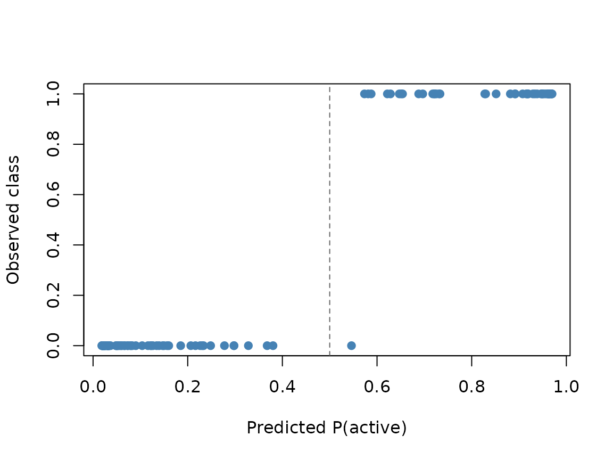

Classification with AddiVortes
John Paul Gosling and Adam Stone
2026-09-11
Source:vignettes/classification.Rmd
classification.RmdThis vignette shows how AddiVortes() fits
binary and multi-category
classification models. The task is chosen automatically from the
response y. Binary classification uses a probit link with
Albert-Chib latent variables. Multi-category classification uses the
same idea with
independent latent ensembles (the first class is the reference
level).
How the response is interpreted
AddiVortes() looks only at y:
- A factor, character or logical vector is classification. Two levels give a binary model; three or more give a multinomial model.
- A numeric vector with exactly two unique values in
{0, 1}is binary classification (1 is the event class). - Any other numeric vector is Gaussian regression, as in previous versions of the package.
The first factor level is the reference class, matching
glm(). For numeric 0/1 data, 0 is the reference. Character
vectors are converted with factor(), so levels are
alphabetical.
Missing values in y are not allowed, and a
classification response must have at least two classes.
Binary classification
We simulate a two-dimensional problem whose labels follow a simple linear boundary.
set.seed(2026)
n <- 120
x <- data.frame(
x1 = runif(n, -1, 1),
x2 = runif(n, -1, 1)
)
y <- factor(ifelse(x$x1 + x$x2 > 0, "active", "inactive"),
levels = c("inactive", "active"))
fit_bin <- AddiVortes(
y, x,
m = 200,
totalMCMCIter = 2000,
mcmcBurnIn = 200,
showProgress = FALSE
)
fit_bin$task
#> [1] "binary"
fit_bin$classLevels
#> [1] "inactive" "active"
fit_bin$inSampleAccuracy
#> [1] 0.9916667predict(..., type = "response") returns the posterior
mean of
,
the probability of the event class (active here).
type = "class" returns labels, and
type = "quantile" gives credible intervals for those
probabilities.
p_hat <- predict(fit_bin, x, type = "response", showProgress = FALSE)
y_hat <- predict(fit_bin, x, type = "class", showProgress = FALSE)
p_int <- predict(fit_bin, x,
type = "quantile",
quantiles = c(0.05, 0.95),
showProgress = FALSE
)
mean(y_hat == y)
#> [1] 0.9916667
range(p_hat)
#> [1] 0.01845073 0.96984245
head(cbind(prob = round(p_hat, 3), lower = round(p_int[, 1], 3),
upper = round(p_int[, 2], 3), class = as.character(y_hat)))
#> prob lower upper class
#> [1,] "0.722" "0.454" "0.924" "active"
#> [2,] "0.048" "0.004" "0.14" "inactive"
#> [3,] "0.09" "0.011" "0.243" "inactive"
#> [4,] "0.718" "0.443" "0.922" "active"
#> [5,] "0.298" "0.087" "0.566" "inactive"
#> [6,] "0.032" "0" "0.129" "inactive"Observations with probability near 0.5 are the most uncertain. The 90% intervals typically cover 0.5 for those points.
plot(p_hat, as.integer(y) - 1,
xlab = "Predicted P(active)",
ylab = "Observed class",
pch = 19, col = "steelblue")
abline(v = 0.5, lty = 2, col = "grey40")
Multi-category classification
With three or more classes, AddiVortes fits
latent ensembles. The argument m is the number of
tessellations per latent, so a three-class model with
m = 15 uses 30 tessellations in total.
set.seed(2026)
n3 <- 90
x3 <- data.frame(
x1 = rnorm(n3),
x2 = rnorm(n3)
)
y3 <- cut(x3$x1, breaks = c(-Inf, -0.5, 0.5, Inf), labels = c("low", "mid", "high"))
fit_multi <- AddiVortes(
y3, x3,
m = 200,
totalMCMCIter = 2000,
mcmcBurnIn = 200,
showProgress = FALSE
)
fit_multi$task
#> [1] "multinomial"
fit_multi$nLatents
#> [1] 2
fit_multi$inSampleAccuracy
#> [1] 0.9888889type = "response" is now an
matrix of class probabilities. Rows sum to 1.
type = "class" returns the class with the largest
probability.
p3 <- predict(fit_multi, x3, type = "response", showProgress = FALSE)
cls3 <- predict(fit_multi, x3, type = "class", showProgress = FALSE)
head(round(p3, 3))
#> low mid high
#> [1,] 0.126 0.400 0.474
#> [2,] 0.684 0.229 0.087
#> [3,] 0.125 0.683 0.192
#> [4,] 0.195 0.672 0.134
#> [5,] 0.451 0.393 0.156
#> [6,] 0.845 0.107 0.048
mean(abs(rowSums(p3) - 1) < 1e-8)
#> [1] 1
table(predicted = cls3, observed = y3)
#> observed
#> predicted low mid high
#> low 30 0 0
#> mid 0 34 1
#> high 0 0 25Notes on the classification prior
On the latent probit scale the residual variance is fixed at
,
so nu, q and InitialSigma are
ignored. Cell means use
which keeps
typically inside
and shrinks class probabilities towards 0.5 (or towards equal class
probabilities in the multinomial case). The default k = 3
is a reasonable starting point.
The response itself is not scaled. Covariates are still centred and scaled exactly as in regression.
For further details of the binary model see Stone, Ogundimu and Gosling (2026). The multi-category construction follows the latent-utility setup of Kindo, Wang and Peña (2016), with independent latents ().